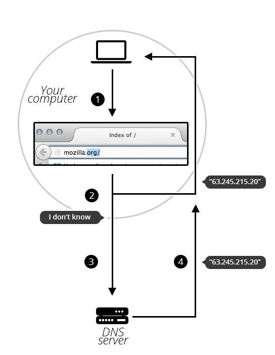

| Prerequisites: | First you need to know how the Internet works and understand what URLs are. |
|---|---|
| Objective: | Learn what domain names are, how they work, and why they are important. |
Domain names are a key part of the Internet infrastructure. They provide a human-readable address for any web server available on the Internet.
Any Internet-connected computer can be reached through a public {{Glossary("IP")}} address, either an IPv4 address (e.g. 173.194.121.32) or an IPv6 address (e.g., 2027:0da8:8b73:0000:0000:8a2e:0370:1337).
Computers can handle such addresses easily, but people have a hard time finding out who's running the server or what service the website offers. IP addresses are hard to remember and might change over time.
To solve all those problems we use human-readable addresses called domain names.
A domain name has a simple structure made of several parts (it might be one part only, two, three...), separated by dots and read from right to left:
Each of those parts provides specific information about the whole domain name.
.com, .org, .net) don't require web services to meet any particular criteria, but some TLDs enforce stricter policies so it is clearer what their purpose is. For example:
.us, .fr, or .se can require the service to be provided in a given language or hosted in a certain country — they are supposed to indicate a resource in a particular language or country..gov are only allowed to be used by government departments..edu TLD is only for use by educational and academic institutions.a, 97, and hello-strange-person-16-how-are-you are all examples of valid labels.You cannot “buy a domain name”. This is so that unused domain names eventually become available to use again by someone else. If every domain name was bought, the web would quickly fill up with unused domain names that were locked and couldn't be used by anyone.
Instead, you pay for the right to use a domain name for one or more years. You can renew your right, and your renewal has priority over other people's applications. But you never own the domain name.
Companies called registrars use domain name registries to keep track of technical and administrative information connecting you to your domain name.
Note : For some domain name, it might not be a registrar which is in charge of keeping track. For instance, every domain name under .fire is managed by Amazon.
To find out whether a given domain name is available,
whois command into it, as shown here for mozilla.org:$ whois mozilla.org Domain Name:MOZILLA.ORG Domain ID: D1409563-LROR Creation Date: 1998-01-24T05:00:00Z Updated Date: 2013-12-08T01:16:57Z Registry Expiry Date: 2015-01-23T05:00:00Z Sponsoring Registrar:MarkMonitor Inc. (R37-LROR) Sponsoring Registrar IANA ID: 292 WHOIS Server: Referral URL: Domain Status: clientDeleteProhibited Domain Status: clientTransferProhibited Domain Status: clientUpdateProhibited Registrant ID:mmr-33684 Registrant Name:DNS Admin Registrant Organization:Mozilla Foundation Registrant Street: 650 Castro St Ste 300 Registrant City:Mountain View Registrant State/Province:CA Registrant Postal Code:94041 Registrant Country:US Registrant Phone:+1.6509030800
As you can see, I can't register mozilla.org because the Mozilla Foundation has already registered it.
On the other hand, let's see if I could register afunkydomainname.org:
$ whois afunkydomainname.org NOT FOUND
As you can see, the domain does not exist in the whois database (at the time of writing), so we could ask to register it. Good to know!
The process is quite straightforward:
Note: In this process the registrar asks you for your real-world address. Make sure you fill it properly, since in some countries registrars may be forced to close the domain if they cannot provide a valid address.
DNS databases are stored on every DNS server worldwide, and all these servers refer to a few special servers called “authoritative name servers” or “top-level DNS servers.” — these are like the boss servers that manage the system.
Whenever your registrar creates or updates any information for a given domain, the information must be refreshed in every DNS database. Each DNS server that knows about a given domain stores the information for some time before it is automatically invalidated and then refreshed (the DNS server queries an authoritative server and fetches the updated information from it). Thus, it takes some time for DNS servers that know about this domain name to get the up-to-date information.
As we already saw, when you want to display a webpage in your browser it's easier to type a domain name than an IP address. Let's take a look at the process:
mozilla.org in your browser's location bar.mozilla.org name, it goes on to ask a DNS server, whose job is precisely to tell your computer which IP address matches each registered domain name.
Okay, we talked a lot about processes and architecture. Time to move on.